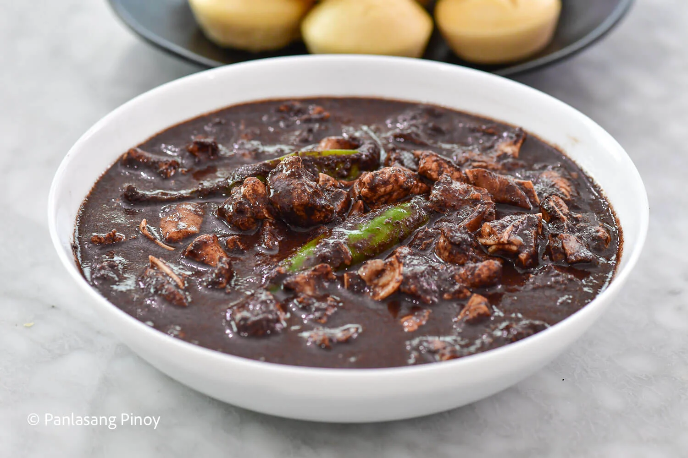

Ingredients
- 1 kg pork belly (or combination of pork meat and innards), cut into small pieces
- 1 cup fresh pig's blood
- 1 medium onion, chopped
- 4 cloves garlic, minced
- 2 tablespoons vinegar
- 2 tablespoons cooking oil
- 2-3 pieces long green chili (siling haba)
- 2 cups water or pork broth
- Salt and pepper to taste
Instructions
- Heat oil in a large pan over medium heat. Sauté garlic and onion until fragrant.
- Add the pork and cook until lightly browned.
- Pour in water or broth. Cover and simmer for 30–40 minutes or until the meat is tender.
- Add vinegar. Do not stir. Let it boil for a few minutes to cook off the acidity.
- Slowly pour in the pig's blood while stirring continuously to avoid curdling.
- Add the green chili and continue simmering for 10–15 minutes or until the sauce thickens.
- Season with salt and pepper to taste. Serve hot with steamed rice or puto (rice cake).